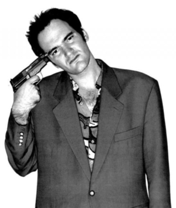
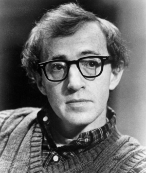
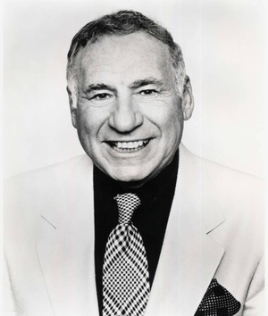
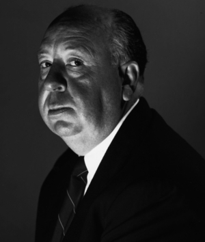

PIPOCAS MÁGICAS
Parabéns! Você achou o balde dos sentimentos,
antiga relíquia que nem mesmo Indiana Jones foi capaz de encontrar.
Você deve arrastar para a tela uma pipoca mágica do balde, cuja cor
você mais se identifica, com o intuito de materializar tal pipoca
em um sentimento. Então, você descobrirá a essência de qual diretor
reside dentro de você!
VOCÊ É QUENTIN TARANTINO!

É fácil identificar um filme de Tarantino quando o assunto é
violência!
Com uma direção nervosa e repleta de outras influências cinematográficas,
o diretor dá um banho de sangue quando o assunto é cinema.
Quentin Tarantino dirigiu os filmes consagrados Cães de Aluguel,
Bastardos Inglórios, Django Livre e Kill Bill, assim sendo um
dos nomes mais aclamados de Hollywood.
VOCÊ É WOODY ALLEN!

Em matéria de amor, Woody Allen é um diretor
que sabe se debruçar com maestria. Capaz de demonstrar sua personalidade
por meio de histórias que simulam o diálogo entre os casais e momentos
bem-humorados, o artista nos cativa por meio de profundidade e leveza.
Allen dirigiu os consagrados Manhattan,
Annie Hall, Ponto Final e Meia-Noite em Paris.
Além de diretor, é ator, escritor e músico.
VOCÊ É MELL BROOKS!

Mell Brooks é um excêntrico cineasta cujas
paródias estão entre as mais aclamadas comédias. É um dos
diretores mais bem sucedidos dos anos 70, deixando sua marca da
felicidade na história do cinema.
Mell Brooks dirigiu os longas consagrados O Jovem Frankenstein,
Banzé no Oeste, A Última Loucura de Mell Brooks e The Producers.
Ele é um ícone da comédia non-sense e acumulou diversas premiações durante sua carreira.
VOCÊ É INGMAR BERGMAN!
Ingmar Bergman se destaca pelo peso dramático
em seus longas permeados por conflitos políticos, sociais e pessoais.
Seu acervo fílmico capta as nuances do rosto humano, principalmente
dos femininos, o que exalta as dores e turbulências dos personagens.
Bergman dirigiu os aclamados Persona,
Mônica e o Desejo, Morangos Silvestres, O Sétimo Selo
e muito mais. O cineasta dirigiu mais de 60 filmes!
VOCÊ É ALFRED HITCHCOCK!

Hitchcock é um dos diretores do terror
e suspense mais bem conceituados de toda a história. Sua especialidade
é o terror psicológico, pois vale-se de imagens que reforçam a
ansiedade e o medo.
Alfred Hitchcock dirigiu os lendários Psicose,
Janela Indiscreta, Um Corpo que Cai e Pacto Sinistro.
O trabalho horripilante e criativo do artista influenciou muitos diretores
renomados e de variadas expertises ao longo da história.